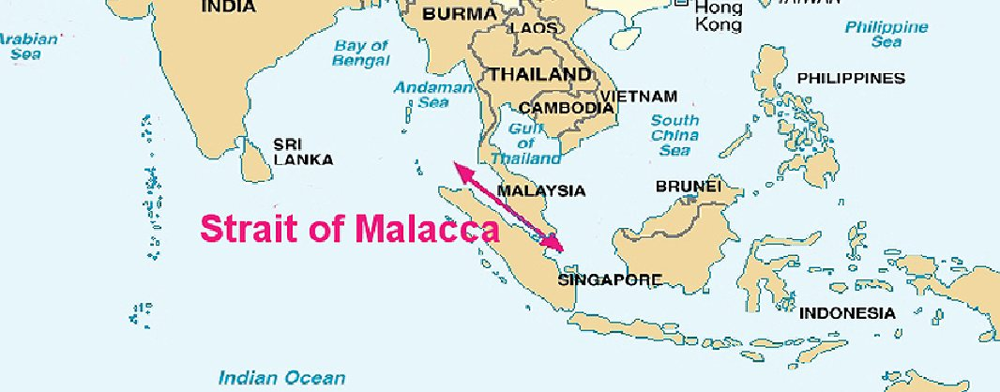
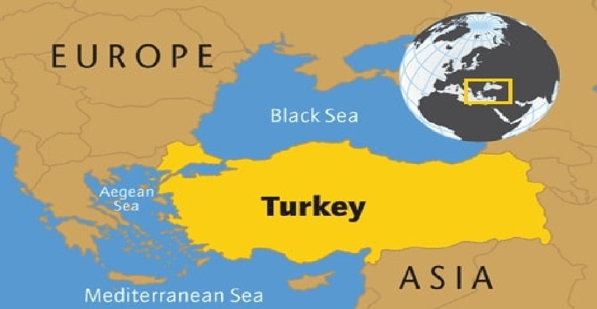
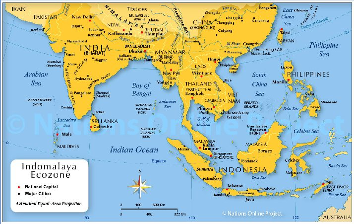
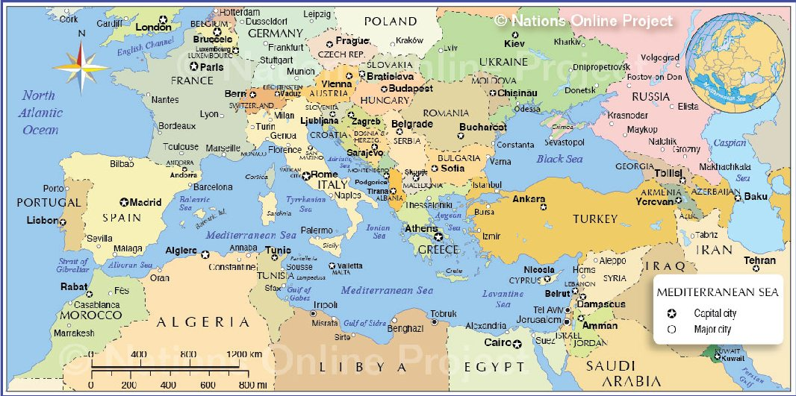
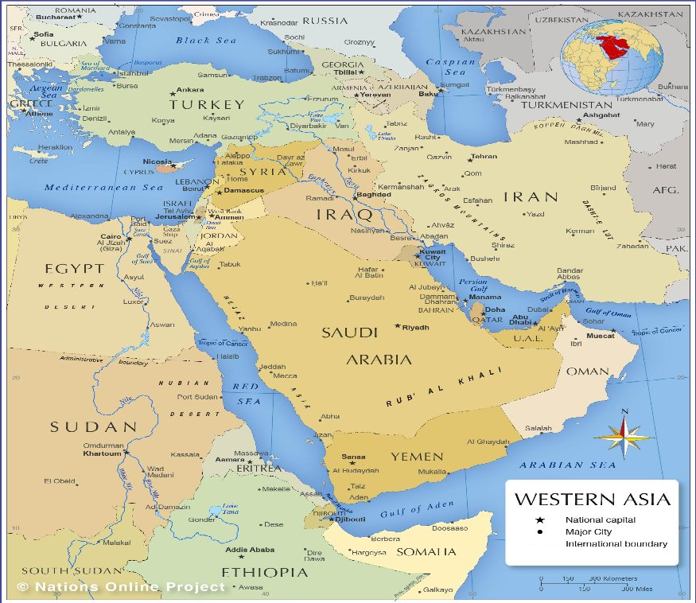
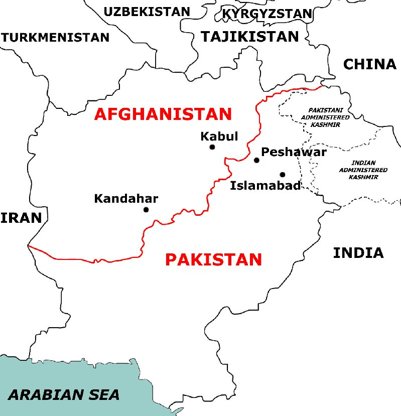
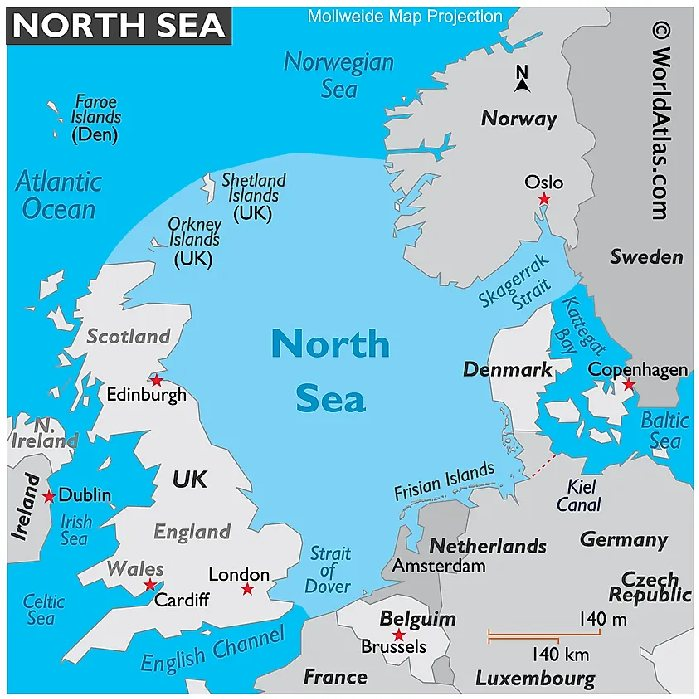

World Mapping PYQ Bank (handout)
Every PYQ in the world-mapping part of the handout, with its map.
About this bank#
Questions, options, answers and explanations are exactly as the handout prints them, with the handout maps. Where the handout contradicts itself it is flagged in a check box.
Q1 · 2011 · Between India and East Asia, the navigation-time and distanc#
Between India and East Asia, the navigation-time and distance can be greatly reduced by which of the following?
- 1. Deepening the Malacca Straits between Malaysia and Indonesia.
- 2. Opening a new canal across the Kra isthmus between the Gulf of Siam and Andaman sea.
Which of the statements given above is/are correct? (2011)
- a) 1 only.
- b) 2 only.
- c) Both 1 and 2
- d) Neither 1 nor 2
Opening a new canal in Kra Isthmus can reduce the navigation time and distance.
- Malacca Strait is the main shipping channel between the Indian Ocean and the Pacific Ocean and links India, China, Japan and South Korea.The Strait of Malacca or Straits of Malacca is a narrow stretch of water, 580 mi in length, between the Malay Peninsula and the Indonesian island of Sumatra. As the main shipping channel between the Indian and Pacific oceans, it is one of the most important shipping lanes in the world.
- The issue of deepening of the Malacca Strait is “linked” to its economic importance rather than “time of navigation and distance”.


Q2 · 2013 · Which one of the following pairs is correctly matched? Geogr#
Which one of the following pairs is correctly matched? (2013)
Geographical Feature Region
- a) Abyssinian Plateau Arabia
- b) The Atlas Mountains North-Western Africa
- c) Guiana Highlands South-Western Africa
- d) Okavango Basin Patagonia
The Atlas Mountains are a mountain range in the Maghreb.
- It stretches around 2,500 km (1,600 mi) through Morocco, Algeria and Tunisia.
- The range's highest peak is Toubkal, with an elevation of 4,167 metres (13,671 ft) in southwestern Morocco. It separates the Mediterranean and Atlantic coastlines from the Sahara Desert.
- The Abyssinian plateau is in Ethiopia (in Africa).
- Guiana Highland is in South America.
- Okavango basin/swamp in the Southern part of Africa.
Q3 · 2014 · Turkey is located between This is map based question, please#
Turkey is located between (2014)
- a) Black Sea and the Caspian Sea
- b) Black Sea and the Mediterranean Sea
- c) Gulf of Suez and the Mediterranean Sea
- d) Gulf of Aqaba and the Dead Sea
This is map based question, please refer map


Q4 · 2014 · What is the correct sequence of occurrences of the following#
What is the correct sequence of occurrences of the following cities in South-East Asia as one proceeds from south to north?
- 1. Bangkok
- 2. Hanoi
- 3. Jakarta
- 4. Singapore
Select the correct answer using the code given below. (2014)
- a) 4-2-1-3
- b) 3-2-4-1
- c) 3-4-1-2
- d) 4-3-2-1
This is map based question, please refer map


Q5 · 2015 · The area known as ‘Golan Heights’ sometimes appears in the n#
The area known as ‘Golan Heights’ sometimes appears in the news in the context of the events related to (2015)
- a) Central Asia
- b) Middle East
- c) South-East Asia
- d) Central Africa
The Golan Heights or simply the Golan is a region in the Levant, spanning about 1,800 square kilometres (690 sq mi).
- The region defined as the Golan Heights differs between disciplines: as a geological and biogeographical region, the Golan Heights is a basaltic plateau bordered by the Yarmouk River in the south, the Sea of Galilee and Hula Valley in the west, the Anti-Lebanon with Mount Hermon in the north and Wadi Raqqad in the east; and as a geopolitical region, the Golan Heights is the area captured from Syria and occupied by Israel during the Six-Day War, territory which Israel effectively annexed in 1981.
- This region includes the western two-thirds of the geological Golan Heights, as well as the Israeli-occupied part of Mount Hermon.
Q6 · 2015 · Which one of the following countries of South-West Asia does#
Which one of the following countries of South-West Asia does not open out to the Mediterranean Sea? (2015)
- a) Syria
- b) Jordan
- c) Lebanon
- d) Israel
Jordan officially the Hashemite Kingdom of Jordan is an Arab country in Western Asia, on the East Bank of the Jordan River.
- Jordan is bordered by Saudi Arabia to the south, Iraq to the north-east, Syria to the north and Israel and Palestine (West Bank) to the west.
- The Dead Sea is located along its western borders and the country has a small coastline to the Red Sea in its extreme south-west but is otherwise landlocked.
- Jordan is strategically located at the crossroads of Asia, Africa and Europe.
- The capital, Amman, is Jordan's most populous city as well as the country's economic, political and cultural centre
Q7 · 2017 · The Mediterranean Sea is a border of which of the following #
The Mediterranean Sea is a border of which of the following countries?
- 1. Jordan
- 2. Iraq
- 3. Lebanon
- 4. Syria Select the correct answer using the code given below: (2017)
- a) 1, 2 and 3 only
- b) 2 and 3 only
- c) 3 and 4 only
- d) 1, 3 and 4 only
Map based question
- At present , 21 countries, with surface areas from 2 km2 to 2.4 million km2, have coastlines on the Mediterranean Sea. They are Albania, Algeria, Bosnia and Herzegovina, Croatia, Cyprus, Egypt, France, Greece, Israel, Italy, Lebanon, Libya, Malta, Monaco, Montenegro, Morocco, Slovenia, Spain, Syria, Tunisia, and Turkey.


Q8 · 2017 · Which of the following is geographically closest to Great Ni#
Which of the following is geographically closest to Great Nicobar? (2017)
- a) Sumatra
- b) Borneo
- c) Java
- d) Sri Lanka
The distance between the Great Nicobar and Sumatra – 1192 km
- The distance between the Great Nicobar and Borneo – 2398 km
- The distance between the Great Nicobar and Java – 2484 km
- The distance between the Great Nicobar and Sri Lanka – 1437 km
Q9 · 2019 · Pairs/list: Sea Bordering country 1. Adriatic Sea : Albania #
Consider the following pairs: Sea Bordering country
- 1. Adriatic Sea : Albania
- 2. Black Sea : Croatia
- 3. Caspian Sea : Kazakhstan
- 4. Mediterranean Sea : Morocco
- 5. Red Sea : Syria
Which of the pairs given above are correctly matched? (2019)
- a) 1, 2 and 4 only
- b) 1, 3 and 4 only
- c) 2 and 5 only
- d) 1, 2, 3, 4 and 5
- The countries with coasts on the Adriatic are Albania, Bosnia and Herzegovina, Croatia, Italy, Montenegro and Slovenia.
- Croatia does not border with the Black Sea
- Kazakhstan shares a border with the Caspian Sea


Q10 · 2020 · Pairs/list: River - Flows into 1. Mekong- Andaman Sea 2. Tha#
Consider the following pairs: River - Flows into
- 1. Mekong- Andaman Sea
- 2. Thames - Irish Sea
- 3. Volga - Caspian Sea
- 4. Zambezi - Indian Ocean
Which of the pairs given above is/are correctly matched? (2020)
- a) 1 and 2 only
- b) 3 only
- c) 3 and 4 only
- d) 1, 2 and 4 only
- Mekong empties into the South China Sea at the Mekong Delta in Vietnam. Statement 1 is incorrect.
- Thames rives lows into the North Sea via the Thames Estuary. Statement 2 is incorrect.
- The Volga is the longest river in Europe. Situated in Russia, it flows through Central Russia to Southern Russia and into the Caspian Sea. The Volga has a length of 3,531 km, and a catchment area of 1,360,000 km2. It is also Europe's largest river in terms of discharge and of drainage basin.
- The Zambezi River is the fourth-longest river in Africa, the longest east-flowing river in Africa and the largest flowing into the Indian Ocean from Africa. The area of its basin is 1,390,000 square kilometres, slightly less than half of the Nile's.
Q11 · 2022 · The term "Levant" often heard in the news roughly correspond#
The term "Levant" often heard in the news roughly corresponds to which of the following regions? (2022)
- (a) Region along the eastern Mediterranean shores
- (b) Region along North African shores stretching from Egypt to Morocco
- (c) Region along Persian Gulf and Horn of Africa
- (d) The entire coastal areas of Mediterranean Sea
- Levant, the region along the eastern Mediterranean shores, roughly corresponding to modern-day Israel, Jordan, Lebanon, Syria, and certain adjacent areas.
Q12 · year not printed · Pairs/list: 1. Azerbaijan 2. Kyrgyzstan 3. Tajikistan 4. Tur#
Consider the following countries:
- 1. Azerbaijan
- 2. Kyrgyzstan
- 3. Tajikistan
- 4. Turkmenistan
- 5. Uzbekistan
Which of the above have borders with Afghanistan?
- (a) 1, 2 and 5 only
- (b) 1, 2, 3 and 4 only
- (c) 3, 4 and 5 only
- (d) 1, 2, 3, 4 and 5


Q14 · 2023 · Pairs/list: 1. Bulgaria 2. Czech Republic 3. Hungary 4. Latv#
Consider the following countries:
- 1. Bulgaria
- 2. Czech Republic
- 3. Hungary
- 4. Latvia
- 5. Lithuania
- 6. Romania
How many of the above-mentioned countries share a land border with Ukraine? (2023)
- (a) Only two
- (b) Only three
- (c) Only four
- (d) Only five
Country Shares land border with Notes Ukraine?
Bulgaria No Separated by Romania and the Black Sea Czech Republic No Located west of Ukraine, does not touch it Hungary Yes Shares a southwestern border with Ukraine Latvia No Located north of Lithuania, doesn't border Ukraine Lithuania No Borders Belarus, but not Ukraine Romania Yes Shares a southern border with Ukraine Additionally, Ukraine also borders:
- Poland
- Slovakia
- Moldova
- Russia
- Belarus
Q15 · 2023 · Pairs/list: Regions often mentioned in news Reason for being#
Consider the following pairs: Regions often mentioned in news Reason for being in news
- 1. North Kivu and Ituri War between Armenia and Azerbaijan
- 2. Nagorno-Karabakh Insurgency in Mozambique
- 3. Kherson and Zaporizhzhia Dispute between Israel and Lebanon
How many of the above pairs are correctly matched? (2023)
- (a) Only one
- (b) Only two
- (c) All three
- (d) None
Explanation:
- 1. North Kivu and Ituri ○ Location: Eastern Democratic Republic of the Congo (DRC)
○ In News Because Of: Armed conflict involving rebel groups (like M23), ethnic violence, and presence of militias such as the Allied Democratic Forces (ADF)
○ Incorrect match: NOT related to Armenia-Azerbaijan war
- 2. Nagorno-Karabakh ○ Location: Disputed territory between Armenia and Azerbaijan ○ In News Because Of: Armed conflict and territorial dispute between Armenia and Azerbaijan , including a recent Azerbaijani offensive in 2023 ○ Incorrect match: NOT related to insurgency in Mozambique
- 3. Kherson and Zaporizhzhia ○ Location: Southern Ukraine ○ In News Because Of: Russian invasion of Ukraine; these regions are part of occupied or contested areas in the Russia–Ukraine war ○ Incorrect match: NOT related to Israel–Lebanon dispute Which one is correctly matched?
- None of the reasons listed are correctly matched to the region.
Q16 · 2024 · The longest border between any two countries in the world is#
The longest border between any two countries in the world is between (2024):
- (a) Canada and the United States of America
- (b) Chile and Argentina
- (c) China and India
- (d) Kazakhstan and Russian Federation
Q17 · 2024 · Pairs/list: 1. The Red Sea receives very little precipitatio#
Consider the following statements:
- 1. The Red Sea receives very little precipitation in any form.
- 2. No water enters the Red Sea from rivers.
Which of the statements given above is/are correct? (2024)
- (a) 1 only
- (b) 2 only
- (c) Both 1 and 2
- (d) Neither 1 nor 2
Q18 · 2024 · Pairs/list: 1. Finland 2. Germany 3. Norway 4. Russia How ma#
Consider the following countries :
- 1. Finland
- 2. Germany
- 3. Norway
- 4. Russia
How many of the above countries have a border with the North Sea? (2024)
- (a) Only one
- (b) Only two
- (c) Only three
- (d) All four


For U, Burgers are Neither Good Nor So Disgusting
Q19 · 2024 · Pairs/list: Region Name of the mountain Type of range mounta#
Consider the following information: Region Name of the mountain Type of range mountain
- 1. Central Asia Vosges Fold mountain
- 2. Europe Alps Block mountain
- 3. North Appalachians Fold mountain America
- 4. South Andes Fold mountain America
In how many of the above rows is the given information correctly matched? (2024)
- (a) Only one
- (b) Only two
- (c) Only three
- (d) All four
Q20 · 2025 · Pairs/list: I. Bolivia II. Brazil III. Colombia IV. Ecuador #
Consider the following countries:
- I. Bolivia
- II. Brazil
- III. Colombia
- IV. Ecuador
- V. Paraguay
- VI. Venezuela
Andes mountains pass through how many of the above countries? (2025)
- (a) Only two
- (b) Only three
- (c) Only four
- (d) Only five
- 1. Bolivia: The Andes traverse western Bolivia, including cities like La Paz and Sucre.
- 2. Brazil lies east of the Andes and does not contain any part of the mountain range.
- 3. Columbia: The Andes split into three branches (Cordillera Occidental, Central, and Oriental) in Colombia.
- 4. Ecuador: The Andes bisect Ecuador from north to south, including the Avenue of the Volcanoes.
- 5. Paraguay: Paraguay is located east of the Andes and lies in a mostly flat region.
- 6. Venezuela: The northernmost extension of the Andes enters Venezuela (Cordillera de Mérida).
Q21 · 2025 · Pairs/list: I. Lake Tanganyika II. Lake Tonlé Sap III. Patos#
Consider the following water bodies:
- I. Lake Tanganyika
- II. Lake Tonlé Sap
- III. Patos Lagoon
Through how many of them does the equator pass? (2025)
- (a) Only one
- (b) Only two
- (c) All the three
- (d) None
- I. Lake Tanganyika : NO
- Location: Between 3° to 9° South latitude in East Africa
- Although it is close to the Equator, it lies entirely south of it.
- II. Lake Tonlé Sap : NO
- Location: Cambodia (Southeast Asia)
- III. Patos Lagoon : NO
- Location: Southern Brazil (State of Rio Grande do Sul)
- Latitude: Around 30° S, far south of the Equator
Q22 · 2025 · Pairs/list: Region Country I. Mallorca Italy II.Normandy Spa#
Consider the following pairs: Region Country
- I. Mallorca Italy II.Normandy Spain
- III. Sardinia France
In how many of the above rows is the given information correctly matched? (2025)
- (a) Only one
- (b) Only two
- (c) All the three
- (d) None
- I. Mallorca : Italy
- Incorrect
- Mallorca (or Majorca) is the largest island in the Balearic Islands, which belong to Spain, not Italy.
- II. Normandy : Spain
- Incorrect
- Normandy is a region in northern France, famous for the D-Day landings during WWII.
- It is not located in Spain.
- III. Sardinia : France
- Incorrect
- Sardinia is the second-largest island in the Mediterranean and belongs to Italy, not France.
- It is an autonomous region of Italy.
Q23 · 2026 · Which of the following statements with reference to Lake Tur#
Which of the following statements with reference to Lake Turkana is/are correct?
- 1. It is the largest desert lake in the world.
- 2. The lake is situated in South Sudan along the eastern fringe of the Sahara desert.
- 3. The lake is listed as a UNESCO World Heritage Site and is also referred to as the ‘Jade Sea’.
Select the answer using the code given below: (2026)
- (a) 1 only
- (b) 1 and 3 only
- (c) 2 and 3 only
- (d) 1, 2 and 3
Explanation: Situated in Kenya with small extension in Ethiopia.
Q24 · 2026 · Ships from which of the following countries have to cross th#
Ships from which of the following countries have to cross the Strait of Hormuz to reach out to the Indian Ocean?
- 1. Bahrain
- 2. Syria
- 3. Qatar
- 4. Egypt Select the answer using the code given below: (2026)
- (a) 1 and 2
- (b) 1 and 3
- (c) 2 and 3
- (d) 3 and 4
Explanation: Egypt and Syria use Suez Canal/Red Sea
Q25 · 2026 · Tungurahua Volcano, which was declared a Global Geopark by U#
Tungurahua Volcano, which was declared a Global Geopark by UNESCO in 2025, is situated in which one among the following countries? (2026)
- (a) Ecuador
- (b) Peru
- (c) Bolivia
- (d) Colombia
Explanation: In the Andes. The region is part of the Tungurahua Volcano UNESCO Global Geopark, recognized for its geological significance, volcanic landforms, biodiversity, and local cultural heritage.